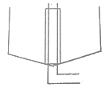

수산양식기사 (2015-03-08 기출문제)
1과목: 어류양식학
1. 참돔은 환경조건, 먹이와 성숙에 따라 체색이 변화된다. 참돔의 체색변화와 관계없는 것은?
- 표층의 강한 광(光)에서 양성한 것은 검은색이 많다.
- 카로티노이드 색소가 많은 갑각류를 먹은 것은 붉은색이다.
- 산란기 때는 암·수 모두 혼인 색을 띠게 되어 체색이 검게 변한다.
- 성숙한 수컷은 두부가 약간 날카롭고 몸 빛깔은 검은색이 짙다.
(정답률: 84%)

2. 실뱀장어 소상에 대한 설명으로 가장 거리가 먼 것은?
- 조금 때 많이 올라오고 사리 때는 거의 올라오지 않는다.
- 하천 수온이 8~10℃가 되는 2~4월에 많이 올라온다.
- 밀물 때 많이 올라오고 썰물 때는 감소한다.
- 일출시보다 일몰시에 많이 소상한다.
(정답률: 80%)
3. 300m2 이상의 양만지에서 용존산소 보급 시 공기분산기보다 수차를 더 많이 사용하는 주된 목적은?
- 더 많은 용존산소량을 주입시킬 수 있기 때문
- 물의 흐름을 일으켜 오물제거에 도움을 주기 때문
- 가동비용이 적게 들기 때문
- 뱀장어에 충격을 주어 단련된 뱀장어를 만들 수 있기 때문
(정답률: 73%)
4. 어류의 혈액응고에 필수적인 성분으로, 어분과 알팔파밀에 많이 함유되어 있는 비타민은?
- 비타민 D
- 비타민 K
- 비타민 B
- 비타민 E
(정답률: 81%)
5. 무지개송어의 친어를 사육하고자 할 때 친어용 먹이의 양에 대한 설명이 옳은 것은? (단, 일반적으로 큰 식용어의 급이량 기준임)
- 산란 후 1개월부터 다음 산란 전 2개월까지는 30%
- 산란 전 2개월에서 산란기까지는 50%
- 산란 기간 중에는 70%
- 산란을 촉진하기 위해 산란 2~3일전부터는 100%
(정답률: 80%)
6. 해산 은어 치어를 운반할 때 사용되는 용수의 담수와 해수의 비는?
- 1:5
- 5:1
- 1:1
- 1:2
(정답률: 76%)
7. 양어사료 제작 시 사료의 물속에서의 안정성을 증대시키고 펠렛의 성형을 돕기 위하여 사료에 첨가하는 것은?
- 점착제
- 식품안정제
- 황산화제
- 착색제
(정답률: 90%)
8. 어류 종묘생산 시 먹이공급 체계로 옳은 것은?
- 알테미아 유생 → 로티퍼 → 배합사료
- 알테미아 유생 → 배합사료 → 로티퍼
- 로티퍼 → 알테미아 유생 → 배합사료
- 로티퍼 → 배합사료 → 알테미아 유생
(정답률: 89%)
9. 어류 먹이 생물의 조건으로 틀린 것은?
- 유생의 입의 크기에 적당해야 한다.
- 대량배양이 용이해야 한다.
- 운동성이 빨라야 한다.
- 영양가가 있는 것이어야 한다.
(정답률: 93%)
10. 다음 중 질병을 일으키기 쉬운 방어양식장의 조건과 가장 거리가 먼 것은?
- 담수유입이 적은 양식장
- 수용밀도가 높은 양식장
- 장기간 연작한 양식장
- 관리가 충분하지 못한 양식장
(정답률: 85%)
11. 체중 5g 되는 방어치어를 10⑤g 되도록 기르는데 소요된 사료의 양은 7000g 이었다고 가정할 때 사료계수는?
- 10⑤
- 5.0
- 7.0
- 10.0
(정답률: 89%)
12. 다음 중 어류가 암모니아 독성으로부터 영향을 가장 많이 받을 수 있는 수질 조건은?
- 용존산소량이 높은 담수
- 용존산소량이 낮은 담수
- 용존산소량이 높은 해수
- 용존산소량이 낮은 해수
(정답률: 70%)
13. 은연어의 해수양식에서 사방 5~10m 되는 사각가두리에 1m3 당 몇 kg 정도까지 수용하면 적정한가?
- 2kg
- 5kg
- 10kg
- 15kg
(정답률: 58%)
14. 방어의 우량종묘를 고르는 기준으로 틀린 것은?
- 겉보기에 둥글둥글하게 살이 쪄 있는 것
- 체색은 황백색을 띠고 있는 것
- 떼를 지어 정상적인 유영을 하는 것
- 기생충의 기생이 없고 어체의 크기가 고른 것
(정답률: 88%)
15. 양식생물 관리의 조건과 양식업 종사자의 자세로 구분할 때 양식생물 관리의 기본 요건이 아닌 것은?
- 적절한 수질 환경을 갖추어 주어야 한다.
- 열심히 일하고 항상 물고기를 지켜보고 정성을 다한다.
- 양식 생물이 필요로 하는 영양을 마련해 주어야 한다.
- 질병과 해적 그 밖의 장해로부터 보호되어야 한다.
(정답률: 83%)
16. 우리나라 능성어류의 생식생태에 대한 설명으로 가장 적합한 것은?
- 능성어류는 자성선숙어 자웅동체형이다.
- 붉바리는 2~3년어부터는 암컷으로 성전환 한다.
- 능성어는 5~7년어부터 암컷으로 성전환 한다.
- 붉바리는 웅성선숙어 자웅이체형이다.
(정답률: 69%)
17. 잉어알을 부화기(병)로 부화하고자 하는 경우 그 과정이 올바르게 설명된 것은?
- 0.85%의 요오드액에 알을 넣고 150~160분간 교반한 후 링거액으로 씻고, 소금 10g, 요소 10g을 물 10L에 녹인 용액에 60~120분간 교반한다. 이 과정이 끝나면 알을 부화병에 담아서 유수식으로 부화시킨다.
- 0.85%의 요오드액에 알을 넣고 100분간 교반한 후 링거액으로 씻고, 소금 40g, 요소 40g을 물 10L에 녹인 용액에 200분간 교반한다. 이 과정이 끝나면 알을 부화병에 담아서 유수식으로 부화시킨다.
- 소금 40g, 요소 40g을 물 10L에 녹인 용액에 60~120분간 교반한 후 링거액으로 씻고, 0.85%의 요오드액에 알을 넣고 150~160분간 교반한다. 이 과정이 끝나면 알을 부화병에 담아서 유수식으로 부화시킨다.
- 소금 10g, 요소 10g을 물 10L에 녹인 용액에 60~120분간 교반한 후 링거액으로 씻고, 0.85%의 요오드액에 알을 넣고 100분간 교반한다. 이 과정이 끝나면 알을 부화병에 담아서 유수식으로 부화시킨다.
(정답률: 82%)
18. 넙치의 산란, 부화 및 발생 등에 대한 설명 중 틀린 것은?
- 자연에서의 산란 가능 수온은 11~17℃이다.
- 수온이 18℃ 전후이면 부화 후 30일 정도에서 몸길이가 11mm전후로 된 후 변태하게 된다.
- 수온 13~18℃에서는 수정 후 50~78시간 정도에서 부화한다.
- 부화된 자어를 수용할 못의 수온은 13℃로 유지하고, 광선의 밝기는 50000lx로 한다.
(정답률: 84%)
19. 넙치알의 성질은?
- 점착성란
- 분리침성란
- 분리부성란
- 점착성부성란
(정답률: 86%)
20. 틸라피아는 암컷이 수컷보다 성장이 어떠한가?
- 빠르다
- 늦다
- 같다
- 처음에는 늦다가 뒤에는 빨라진다
(정답률: 78%)
2과목: 무척추동물양식학
21. 참굴의 부착치패 관리법에 대한 설명으로 옳은 것은?
- 부착치패는 4~5일이 지나면 주연각이 형성된다.
- 전기채묘한 치패는 약 2주일이 지나면 단련 장으로 옮긴다.
- 후기채묘한 치패는 2,3주일이 지나면 단련시키지 않고 양성장으로 옮긴다.
- 단련종굴은 그 크기가 작지만 생존율은 높은 편이다.
(정답률: 75%)
22. 다음 중 전복 치패의 먹이로 가장 거리가 먼 것은?
- Cocconeis sp.
- Navicula sp.
- Amphora sp.
- Skeletonema sp.
(정답률: 75%)
23. 닭새우 phyllosoma기의 적당한 먹이가 아닌 것은?
- 미소 Zooplankton
- 브라인슈림프의 부화유생
- Copepoda
- Pavlova lutheri
(정답률: 72%)
24. 다음 중 피조개류의 자연채묘방법으로 적당한 것은?
- 침설식 수하 채묘시설
- 완류식 채묘시설
- 부동식 채묘시설
- 간출식 채묘시설
(정답률: 74%)
25. 보리새우 암수의 교미에 대한 설명으로 맞지 않는 것은?
- 탈피직후의 암컷과 경갑상태의 수컷 사이에 교미가 이루어진다.
- 암컷은 수컷으로부터 정협을 받아 저정낭에 저장한다.
- 교미한 보리새우 암컷은 교미전을 가지지 않는다.
- 탈피하면 교미전과 정협이 탈피각과 함께 떨어져나간다.
(정답률: 85%)
26. 3m 크기의 전복 인공종묘의 방류수심으로 가장 적합한 것은?
- 3~5m
- 5~10m
- 5~8m
- 1~3m
(정답률: 55%)
27. 전복의 서식 장소로서 적합하지 않는 곳은?
- 해조류가 많이 번무하는 곳
- 외양수 영향을 받는 연안인 곳
- 저질이 사질인 곳
- 수심 20m 내외 되는 곳
(정답률: 54%)
28. 다음 중 조개류의 비만도(condition index)를 가장 잘 설명한 것은?
- 각내 용적분의 연체부 건조중량에 1000을 곱한 값
- 각내 용적분의 연체부 생식소중량에 1000을 곱한 값
- 각내 용적분의 연체부 중량에 1000을 곱한 값
- 각내 용적분의 연체부 글리코겐 축적량에 1000을 곱한 값
(정답률: 80%)
29. 저서성 해적생물의 피해를 가장 적게 받는 양식법은?
- 수하식
- 나뭇가지식
- 투석식
- 우산형식
(정답률: 77%)
30. 대합의 이동특성을 이용한 양성방법은?
- 조위망식 양성
- 채롱 수하식 양성
- 귀매달이 양성
- 개방식 양성
(정답률: 84%)
31. 꽃게 인공종묘생산에 대한 설명 중 알맞은 것은?
- 산란 성기는 10~11월이다.
- 안병절제를 통하여 성숙을 유도한다.
- 수온 30℃에서 부화기간은 20일 정도이다.
- 부화유생의 적정 수용밀도는 5~10만 마리/톤 이다.
(정답률: 63%)
32. 다음 양식생물 중 유생기의 이름이 잘못 짝지어진 것은?
- 보리새우 - 미시스 유생
- 우렁쉥이 – 미충형(tadpole) 유생
- 가리비 – D상 유생
- 참굴 – 노우플리우스 유생
(정답률: 82%)
33. 다음 중 부착생물에 속하지 않는 것은?
- 참가리비
- 진주조개
- 진주담치
- 참굴
(정답률: 73%)
34. 진주조개의 유생채묘를 위한 채묘기 수하수심은?
- 0.1~0.3m
- 0.5~3m
- 5~10m
- 15~20m
(정답률: 69%)
35. 다음 전복의 채란에 많이 이용되고 있는 방법 중 가장 효과적인 인위적 자극 방법은?
- 염분 자극
- 간출 자극
- 자외선 조사 자극
- 생식선 첨가 자극
(정답률: 75%)
36. 다음 중 대합의 양식용 종패로서 가장 적합한 크기는?
- 각장 2cm 정도
- 각장 4cm 정도
- 각장 6cm 정도
- 각장 8cm 정도
(정답률: 56%)
37. 키조개에 대한 설명으로 가장 거리가 먼 것은?
- 패각의 모양은 삼각형이며 후폐각근을 주로 식용으로 이용한다.
- 생식소는 암컷이 적갈색, 수컷이 담황백색으로 구분이 쉽다.
- 부유유생은 각고 550㎛ 정도로 조개류 유생 중 가장 크다.
- 주로 사용되는 양성방법은 밧줄 수하식 양성과 채롱식 양성이다.
(정답률: 77%)
38. 참굴 채묘장에서 따개비의 부착이 많을 때 그 부착을 최대한으로 방지하는 방법으로 가장 적합한 것은?
- 적정 참굴 채묘수심보다 채묘수심을 약 30cm 정도 높인다.
- 노출시간을 짧게 하여 채묘한다.
- 와류수역을 형성한다.
- 조류 소통을 잘 되게 한다.
(정답률: 70%)
39. 고막류의 양식을 위해 알아두어야 할 내용으로 틀린 것은?
- 고막류는 피조개만이 양식되고 있다.
- 고막류의 성숙기는 대체로 7월부터 10월 사이이다.
- 유생의 색은 새고막은 희미한 적색이고 피조개는 적색에 가깝다.
- 피조개와 새고막은 서식 깊이는 다르지만 해저물길 같은 곳에 많다.
(정답률: 79%)
40. 우렁쉥이가 여름철에 맛이 좋은 것은 어떤 성분 때문인가?
- 단백질
- 지방
- 글리코겐
- 비타민
(정답률: 87%)
3과목: 해조류양식학
41. 미역종묘 배양에 있어서 다음 중 처리 방법에 대한 설명으로 가장 거리가 먼 것은?
- 초기에 온도상승과 함께 조도를 낮추어 준다.
- 1주일에 1회 채묘틀의 상하를 바꾸어 준다.
- 가을에 성숙을 촉진시키기 위해서 직사광선을 장시간 매일 쪼인다.
- 채묘 3~4일 후에 물갈이를 해준다.
(정답률: 80%)
42. 뜬 흘림발의 닻의 고정력과 관계된 설명 중 옳지 않은 것은?
- 무른 저질에서는 닻손이 넓고 각도가 작을수록 좋다.
- 단단한 저질에서는 닻손이 좁고 길며 각도가 큰 것이 좋다.
- 수심에 대한 닻줄의 길이는 길수록 좋다.
- 수심에 대한 닻줄의 길이가 짧을수록 닻의 고정력은 커진다.
(정답률: 72%)
43. 우뭇가사리의 생태조건과 관련이 없는 것은?
- 포자 방출은 16~18시에 많다.
- 조류가 크게 왕복운동 하는 곳에 많다.
- 포자의 방출 성기는 여름(수온21~27℃)이다.
- 12~2월중의 수온과 생산의 풍흉은 역상관(逆相關)관계이다.
(정답률: 68%)
44. 다시마 양성법 중 성숙시기가 가장 빠른 것은?
- 2년 양식
- 촉성 양식
- 억제배양 양식
- 1년 양식
(정답률: 90%)
45. 다음 중 김 양식장에서 일반적으로 해수교환에 가장 큰 역할을 하는 것은?
- 조석류
- 파랑류
- 취송류
- 하구류
(정답률: 83%)
46. 미역의 생장대가 있는 부분은?
- 잎과 줄기 사이
- 잎의 끝 부분
- 줄기 중앙 부분
- 줄기 기부 부근
(정답률: 79%)
47. 무기질(Free-living) 김 사상체 배양의 특성으로 틀린 것은?
- 선발육종(選拔育種)을 간단하게 할 수 있다.
- 배양을 위한 넓은 장소가 필요하지 않다.
- 과포자는 매년 구하여야 하나 채묘시기를 쉽게 조절 할 수 있다.
- 병의 침범이 적고 배양 관리가 쉽고 경제적이다.
(정답률: 76%)
48. 미역의 배우체와 아포체의 성숙 및 발아조건의 설명이 옳은 것은?
- 20℃ 이상에서 잘 된다.
- 150lux 이하에서는 성숙하지 않는다.
- 일조시간이 긴 편이 좋다.
- 비중은 1.020 이상이면 성숙이나 발아가 늦어진다.
(정답률: 56%)
49. 다음 중 풀가사리의 좌에 대한 설명으로 틀린 것은?
- 모체에서 방출된 포자가 발아하여 얇은 세포층으로 된 편평한 반상체를 말한다.
- 타원형으로 긴 지름이 4~8mm정도이며, 인접한 것과 접착하기도 한다.
- 좌의 형성은 7월 상·중순에 시작되고 10월 중에 그친다.
- 수온이 낮아지면 좌에서 직립체가 발생하는데 10월 하순에 시작되어 익년 1월 하순에 그친다.
(정답률: 59%)
50. 김의 사상체와 조도 및 광주기와의 관계 설명이 틀린 것은?
- 고온 장일하에서는 가지가 많아진다.
- 고조도와 장일 하에서는 색이 붉다.
- 고조도에서 자라면 각포자의 방출이 고르다.
- 고조도하에서는 사상체가 깊게 파고 들어간다.
(정답률: 69%)
51. 유용 해조를 위한 갯닦기의 주 대상이 되지 않는 것은?
- 대형 다년생 해조
- 소형 다년생 해조
- 1년생 해조
- 말잘피류
(정답률: 68%)
52. 알긴(algin)산의 원료가 되는 해조가 속하는 문은?
- 홍조식물
- 녹조식물
- 남조식물
- 갈조식물
(정답률: 70%)
53. 외양의 깊은 곳에 가장 알맞은 김 양식 시설은?
- 섶
- 뜬흘림발
- 뜬발(지네발)
- 뜬발(그물발)
(정답률: 86%)
54. 몸 가장자리가 톱니 모양으로 된 것은?
- 둥근김
- 방사무늬김
- 긴잎돌김
- 둥근돌김
(정답률: 59%)
55. 중성포자를 방출한 후 김의 엽형은?
- 둥근형
- 장엽형
- 삼각형
- 역삼각형
(정답률: 75%)
56. 참다시마의 양식관리에서 솎음의 요령으로 가장 적합한 설명은?
- 4~5월까지 두었다가 20~50개체/m 되게 한 번에 솎아주어야 손상이 적다.
- 1월 초에 20~50개체/m 되게 솎아주고 탈락이 심해지면 다시 보충한다.
- 처음부터 20~50개체/m 로 드물게 솎아주어야 성장이 잘 된다.
- 몇 차례로 나누어서 솎아주고 4~5월경 20~50개체/m 되게 한다.
(정답률: 73%)
57. 다음 중 서해연안에서 솎음의 요령으로 가장 적합한 설명은?
- 전부동 그물발식
- 수평 외줄 연승식
- 뗏목식
- 조립연승식
(정답률: 74%)
58. 생식세포를 이용하여 증식을 하면 3년이 경과한 뒤에야 그 효과가 크게 나타나는 해조류는?
- 돌김
- 톳
- 자연산 미역
- 꼬시래기
(정답률: 80%)
59. 김 종묘생산 과정 중 채묘 작업이란 어떤 일을 의미하는가?
- 각포자의 투입
- 사상체의 배양
- 각포자의 부착
- 중성포자의 방출촉진
(정답률: 68%)
60. 세대교번을 하지 않는 해조류는?
- 미역
- 김
- 다시마
- 청각
(정답률: 83%)
4과목: 양식장환경
61. 질화과정에 관여하는 질화세균의 특징으로 가장 적합한 것은?
- 종속영양세균 - 호기성세균
- 독립영양세균 - 호기성세균
- 종속영양세균 - 혐기성세균
- 독립영양세균 - 혐기성세균
(정답률: 79%)
62. 순환여과 시스템에서 생물여과조 기능의 최종목표는?
- 암모니아를 아질산으로 산화시킴
- 질산염을 암모니아로 환원시킴
- 질산염을 질소로 환원시킴
- 암모니아를 질산염으로 산화시킴
(정답률: 75%)
63. 수계에서 환경의 조절 인자로서 매우 중요한 영양염류에 대한 설명으로 옳은 것은?
- 담수에서는 질소, 인, 칼슘이 부족하기 쉽다.
- 오래된 김 양식장에서는 칼륨이 부족해지기 쉽다.
- 해수에서 칼륨은 풍부하지만 규산염이 부족하기 쉽다.
- 집약적 양식장에서 시비는 생산량 증대에 필수적이다.
(정답률: 69%)
64. 해수의 COD를 측정할 때 염소이온이 방해가 된다. 이것을 제거하기 위하여 필요한 물질은?
- Ag2SO4
- Hg2SO4
- Hg2Cl2
- Zn(NO3)2
(정답률: 70%)
65. 폐쇄적 순환 양식장에서 사용하는 생물학적 여과의 무기물화 과정에 대한 설명이 옳은 것은?
- 여과조에 살고 있는 타가영양세균의 분해작용으로 유기물이 무기물로 된다.
- 무기물화 시키는 과정이 생물학적 여과의 최종단계이다.
- 무기물화 과정의 효율은 고형 유기물의 양이 많을수록 높아진다.
- 이 과정은 혐기적 조건하에서 그 반응이 활발해지므로 밀폐된 곳일수록 분해 반응이 효율적이다.
(정답률: 67%)
66. 시료수 채취와 분석 시 지켜야 할 기본적 사항 중 틀린 것은?
- 채취일시, 지점, 천기, 수심, 수위, 유량, 저질 등의 기록을 유지한다.
- 수질을 대표하는 시료가 채취되어야 한다.
- 유리 용기 또는 중성 플라스틱 용기를 시료수병으로 사용한다.
- 한번 해동한 시료는 다시 동결한 후 재분석에 사용할 수 있다.
(정답률: 86%)
67. 하천에서 오염물이 유입되는 유입점인 하류지역의 특징은?
- 용존산소 농도가 높아지고 탁도가 낮다.
- 용존산소 농도가 높아지고 탁도가 높다.
- 용존산소 농도가 낮아지고 탁도가 높다.
- 용존산소 농도가 낮아지고 탁도가 낮다.
(정답률: 84%)
68. 다음 중 순환여과식 양식장에서 pH안정을 위해서 사용하는 것은?
- 탄산가스
- 중탄산나트륨
- 탄산칼륨
- 염분
(정답률: 80%)
69. 다음 중 임펠러(impeller)의 회전에 의해 작동되는 펌프는?
- 피스톤펌프
- 왕복펌프
- 원심력펌프
- 공기양수기
(정답률: 72%)
70. 고속모래 여과장치의 주 기능은?
- 생물학적 여과
- 물리적 여과
- 물리적 흡착
- 이온 교환
(정답률: 85%)
71. 굴 양식장의 수질 환경요인 중 부적합한 조건은?
- 화학적 산소 요구량 2ppm 이하인 수질
- 용존산소 포화율 85% 이상의 수질
- 부유물질량 25ppm 이하의 수질
- 수소이온 농도 5.0~6.0인 수질
(정답률: 63%)
72. 양어장의 수질 문제에 큰 비중을 차지하는 암모니아는 다음 어느 것에서 유래하는가?
- 단백질
- 탄수화물
- 지방
- 비타민
(정답률: 75%)
73. 다음 그림은 양식시설의 장치 중 무엇을 나타낸 모식도인가?

- 원뿔형 중앙 배수 장치
- 벤튜리 배수 장치
- 순환여과식 사육장치
- 순환 수류 이용 찌꺼기 제거 장치
(정답률: 80%)
74. 암모니아 독성에 영향을 주는 환경인자와 가장 거리가 먼 것은?
- 온도
- 염분
- 광선
- pH
(정답률: 80%)
75. 환경조건이 동일한 상태에서 다음 양식장을 같은 규모로 신설할 경우 어장노화를 가장 빨리 초래할 것으로 생각되는 양식방법은?
- 조피볼락의 가두리 양식
- 김의 뜬흘림발 양식
- 우렁쉥이 밧줄수하식 양식
- 피조개 바닥양식
(정답률: 84%)
76. 양어장에서 자연수의 미세현탁물을 제거하기 위해 일반적으로 사용하고 있는 모래여과 방식에 관한 설명 중 틀린 것은?
- 가장 많이 쓰이는 모래 여과재는 유효지름이 0.6mm이고, 일반적인 범위는 0.3~0.7mm, 균등 게수는 1.4 이하이다.
- 고속여과의 결점을 보완한 연속 역세정 여과는 역여과 과정에서 중앙의 설치된 에어리프트 펌프에 의해서 여과층의 모래가 계속 세정되도록 함으로서 연속적인 여과가 가능하다.
- 한번 사용한 물을 찌꺼기 등의 고형물만 제거하고, 계속적으로 순환시켜 사용하는 순환여과양식장에서는 물 속에 녹아 있는 유해물질을 빠르게 산화시켜야 한다.
- 저수조에 오는 물은 모래, 자갈 여과기를 거쳐 장기간 가동하게 되면 미세한 세사나 펄들이 저면에 쌓이기 때문에 이러한 물질을 쉽게 배출될 수 있도록 저면의 구배를 30~50%의 경사를 주는 것이 좋다.
(정답률: 53%)
77. 양어지에서 물을 뺀 다음 마지막으로 남은 물고기를 모으기 위하여 배수구 앞에 만든 웅덩이는?
- 모임지
- 휴식터
- 집수부
- 축양지
(정답률: 85%)
78. 다음 중 적조 발생에 미량금속이 자극요인으로 작용하기 위해서 가장 필요한 조건은?
- 고염분
- 저염분
- 고수온
- 유기물
(정답률: 64%)
79. 기기 자체의 무게에 의해서 해저면을 일정한 거리로 끌어서 시료를 채취하는 채니 방법은?
- 그래브식
- 드레지식
- 코어식
- 아지드식
(정답률: 82%)
80. 소독은 패류 등 무척추동물의 산란, 부화용수 또는 해조류의 포자배양에 사용할 용수 속의 병원 미생물을 죽이기 위해서 이용되는데 다음 소독과 관련된 내용 중 틀린 것은?
- 자외선을 쬐면 물 속 미생물세포 속의 DNA를 비활성화시킴으로서 직접적으로 이들 생물을 죽인다.
- 물 속에 현탁되어 있는 용존 유기물량이 많으면, 자외선의 투과력이 감소하여 그 효과가 떨어진다.
- 오존발생기는 자외선을 쬐는 것보다 효과가 더욱 크나. 오존 처리된 배출수는 에어레이션을 시켜 여분의 오존과 산소를 배출시킨 다음 사육조로 보내야 한다.
- 수중에 남아있는 오존은 어류와 무척추동물에 직접 해를 끼치게 되며, 오존이 분해 될 때 형성된 산소는 물 속에서 과포화상태로 되어서 양식동물에 기포병을 일으킬 수 있다.
(정답률: 55%)
5과목: 수산질병학
81. 넙치의 에드와드증과 연쇄구균증의 복합감염에 관한 설명 중 틀린 것은?
- 1~2 마리의 병어가 발생될 때 조기진단을 하여 약제를 투여해야 효과를 거둘 수 있다.
- 먼저, 에드와드증을 치료하여 폐사율을 줄인 다음 연쇄구균증을 치료하여야 한다.
- 실제 수온이 25℃ 이상 유지되면 약제 투여효과가 나타나지 않는다.
- 밀식된 양식장에서 약제를 투여하면 효과를 나타내기 어렵다.
(정답률: 64%)
82. 양식 어류가 복부를 수면에 노출시키면서 운동하는 모습이 관찰된다면 어떤 경우인가?
- 먹이를 많이 먹었을 경우
- 부레가 파열되었을 경우
- 점액포자충에 감염되었을 경우
- 복수가 많이 고여있을 경우
(정답률: 69%)
83. Trichodina 증의 특징이라고 볼 수 없는 것은?
- 수중을 활발히 운동하며 기생숙주를 옮기기도 한다.
- 아가미에 기생하면 병변은 생기나 호흡장애는 생기지 않는다.
- 기생부위는 체표, 지느러미, 비공, 아가미 등이다.
- 담수 및 해산어의 체표에 기생하면 피해가 크다.
(정답률: 72%)
84. RNA virus 가 아닌 것은?
- IPNV
- SVCV
- HIRRV
- FHV
(정답률: 59%)
85. Epizootic hematopoietic necrosis 의 설명으로 맞지 않는 것은?
- OIE 지정 질병이다.
- Australia 에서만 발생이 확인된다.
- 감염어는 red perch이다.
- 병원체는 herpesvirus이다.
(정답률: 58%)
86. 봄철 저수온기에 잉어, 송어류, 메기의 체표나 아가미에 기생, 많은 점액분비와 함께 대량 폐사되는 Chilodnella 증의 원인과 치료 대책을 설명한 것 중 옳지 못한 것은?
- 좌측 9~15열, 우측 8~13열의 섬모열이 있는 섬모층으로 세포구를 어류표피조직에 삽입시켜 영양분을 흡수한다.
- 많이 기생한 아가미는 상피세포의 증식이 뚜렷하며, 새판은 유착되고 곤봉화되어 그 상피세포는 변성 괴사한다.
- 숙주특이성이 있으며, 증식가능 온도는 21~30℃이며 최적온도는 25~27℃이다.
- 조건성 병원체로서 잉어, 금붕어 등의 치어기에 대량번식 하는데 저수온에서 고밀도 사육이 번식조건이 된다.
(정답률: 46%)
87. 충체가 지느러미나 체표에 기생하여도 숙주 어류에 피해가 거의 없는 것은?
- 방어의 미포자충증
- Dactylogyrus증
- 방어의 피부흡충증
- 담수어의 흑점병
(정답률: 75%)
88. Saprolegnia parasitica의 발육에 가장 적당한 수온은?
- 5℃ 내외
- 14℃ 내외
- 20℃ 내외
- 25℃ 내외
(정답률: 44%)
89. 잉어의 봄 Virus(SVC)병이 발생하는 수온은?
- 30℃ 이상
- 24~29℃
- 13~20℃
- 10℃ 이하
(정답률: 66%)
90. 다음 세균성질병을 예방하기 위한 여러 가지 방법 중 가장 적합한 것은?
- 고밀도로 단기간 사육해서 상품화 한다.
- 모든 기구와 사육수조를 소독하고 구입한 고기도 약욕시킨다.
- 구입한 고기를 약욕 시킨 후, 기존의 어류와 혼합양성 시킨다.
- 수온 변화를 피하기 위하여 순환 여과식으로 사육한다.
(정답률: 79%)
91. 연어과 어류의 세균성 신장병의 원인균은?
- Aeromonas salmonicida
- Renibacterium salmoninarum
- Flexibacter maritimus
- Pseudomonas sp.
(정답률: 74%)
92. 김 사상체가 병으로 죽을 때 처음에 나타나는 색은?
- 붉은색
- 녹색
- 황색
- 백색
(정답률: 71%)
93. 넙치에 안구돌출이 일어난 경우 그 원인이 될 수 없는 것은?
- 에드워드병
- 활주세균병
- 비브리오병
- 연쇄구균병
(정답률: 63%)
94. 넙치의 연쇄구균증이 치료하기가 힘든 이유와 가장 거리가 먼 것은?
- 장관 내에 항시 정착하여 증식을 반복하기 때문에
- 유효한 약제일지라도 투약방법이 적절하지 못했기 때문에
- 병어의 조직 내 육아종을 형성하기 때문에
- 발병 시 사료공급을 7일간 중지하기 때문에
(정답률: 65%)
95. 김 갯병 중 저염분의 영양 하에서 기계적인 자극으로 생기는 것은?
- 구멍갯병
- 흰갯병
- 붉은갯병
- 싹갯병
(정답률: 67%)
96. 뱀장어에 기적병을 일으키는 세균은?
- Pseudomonas fluorescens
- Pseudomonas angilliseptioca
- Aeromonas salmonicida
- Aeromonas hydrophila
(정답률: 65%)
97. 미꾸라지를 축양하기 위해 유수식 축양지에 넣은 것이 갑자기 피부가 희게 벗겨지며 대량 폐사가 일어났으나 정수식 못에 높은 밀도로 수용한 것은 이상이 없었다면 이 경우 감염의 가능성이 가장 큰 균은?
- Flavobacterium columnare
- Aeromonas salmonicida
- Pasteurella piscicida
- Vibrio anguillarum
(정답률: 48%)
98. Columnaris 병이 지수식보다 유수식 양어지에서 많이 생기는 이유로 가장 적합한 것은?
- 병원균이 자랄 수 있는 영양분이 많기 때문이다.
- 미꾸라지의 생활환경에 적합하지 않기 때문이다.
- 수중 산소량이 풍부하기 때문이다.
- 수온이 일정 유지되기 때문이다.
(정답률: 64%)
99. DNA Virus 에 의한 질병과 관계가 있는 것은?
- 바이러스성 출혈성 패혈증(VHS)
- 바이러스성 적혈구괴사증(VEN)
- 전염성 췌장괴사증(IPN)
- 넙치 랍도바이러스병(HRV)
(정답률: 51%)
100. 다음 중 어류의 골격이 기형화되는 조건과 가장 큰 관계가 있는 것은?
- 지방결핍
- Myxidium 감염
- 비타민 C의 부족
- 비타민 B의 부족
(정답률: 64%)
산란기 때 암과 수컷 모두 혼인 색을 띠게 되어 체색이 검게 변하는 이유는, 산란기 때 참돔은 암과 수컷 모두 색이 비슷해지면서 서로를 더 잘 구별할 수 있게 되기 때문이다. 이는 번식 활동에 도움을 주는 진화적 적응의 일환으로 볼 수 있다.